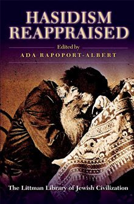

Hasidism Reappraised
'An
opportunity to encounter virtually all the most important trends in the
study of Hasidism . . . a volume that will be essential for anyone with
a serious interest in Hasidism and indeed for any Judaica collection.'
Miles Krassen, Journal of Jewish Studies
'Handsome . . . comprehensive indeed, and profound, articulate, often
gripping, and frequently counter to conventional wisdom . . . [a] superb
job of translating, editing and reducing to easily readable length . .
.'
Lewis Glinert, Le'ela
'Probably the most important analytical study of the Hasidic movement
to have appeared in the English language.'
Edgar Samuel, Jewish Historical Studies
More info
'Magnificent . . . a consummate work of scholarship . . . to be read as
well as to be dipped into and also to have as a major reference work.'
Alex Auswaks, Jerusalem Post
Hasidism has been a seminal force and source of controversy in the Jewish world since its inception in the second half of the eighteenth century. Indeed, almost every ideological trend that has made itself felt among Jews since that time-from Zionism and Orthodoxy to contemporary Jewish feminism and movements within the yeshiva world-has claimed to have derived some inspiration from this vibrant movement. While this is sure testimony to its vitality and originality, it has also given rise to many misconceptions as to what hasidism is about.
This major work, the first comprehensive critical study of hasidism in English, offers a wide-ranging treatment of the subject in all its aspects by what is effectively the entire present generation of scholars working in the field. With contributions ranging from the history of theology and of ideas through social and economic history to contemporary sociology, Hasidism Reappraised encompasses a complete field of modern scholarship in a discipline that is central to the understanding of modern Jewish history and the contemporary Jewish world.
The twenty-eight authors who have contributed to the main body of the book are almost without exception established scholars with international reputations. The volume as a whole is dedicated to the memory of Joseph Weiss, and its opening section assesses his contribution to the study of hasidism in the context of his relationship with Gershom Scholem and Scholem's long-standing influence on the field. The remaining contributions are arranged thematically under seven headings: the social history of hasidism; the social functions of mystical ideals in the hasidic movement; distinctive outlooks and schools of thought within hasidism; the hasidic tale; the history of hasidic historiography; contemporary hasidism; and the present state of research on hasidism. The book also incorporates an extensive introduction that places the various articles in their intellectual context, as well as a bibliography of hasidic sources and contemporary scholarly literature.
Hasidism Reappraised shows an intellectual world at an important juncture in its development and points to the direction in which scholarly study of hasidism is likely to develop in the years to come.
About the author
Ada Rapoport-Albert is Professor Emerita of Jewish Studies and former Head of the Department of Hebrew and Jewish Studies at University College London. She is the author of various studies on the history of hasidism, including Women and the Messianic Heresy of Sabbatai Zevi, 1666–1816 (2011) and Hasidic Studies: Essays in History and Gender (2016), both published by the Littman Library.
Contributors
Jacob Barnai, Israel Bartal, Joseph Dan, Rachel Elior, Immanuel Etkes, Shmuel Ettinger, Morris M. Faierstein, Roland Goetschel, Arthur Green, Zeev Gries, Karl Erich Grözinger, Moshe Hallamish, Gershon Hundert, Moshe Idel, Louis Jacobs, Jacob Katz, Naftali Loewenthal, Daniel Meijers, Yehoshua Mondshine, Gedalyah Nigal, Mendel Piekarz, Ada Rapoport-Albert, Moshe J. Rosman, Bracha Sack, Yoseph Salmon, Chone Shmeruk, Sara Ora Heller Wilensky, Elliot R. Wolfson
Contributor information
Israel Bartal, Associate Professor of Jewish History, Hebrew University of
Jerusalem
Joseph Dan, Gershom Scholem Professor of Kabbalah, Hebrew University of
Jerusalem
Rachel Elior, Professor of Jewish Thought, Hebrew University of Jerusalem
Immanuel Etkes, Professor of Modern Jewish History, Hebrew University of
Jerusalem
Shmuel Ettinger, late Emeritus Professor of Modern Jewish History, Hebrew
University of Jerusalem
Morris M. Faierstein, Jewish Chaplain, US Air Force in Europe
Roland Goetschel, University Professor, and Director, Institute of Jewish Studies,
University of Paris (Sorbonne)
Arthur Green, Philip W. Lown Professor of Jewish Thought, Brandeis University
Zeev Gries, Senior Lecturer in History, Ben-Gurion University of the Negev
Karl Erich Grözinger, Professor of Comparative Religion and Jewish Studies,
University of Potsdam
Moshe Hallamish, Alexandre Safran Professor of Kabbalah, Bar Ilan University
Gershon David Hundert, Professor of Jewish Studies and History, McGill University
Moshe Idel, Professor of Jewish Thought, Hebrew University of Jerusalem
Louis Jacobs, Founding Rabbi, New London Synagogue; Visiting Professor, University
College London
Jacob Katz, Emeritus Professor of Jewish History, Hebrew University of Jerusalem
Naftali Loewenthal, Honorary Research Fellow, and Adjunct Lecturer, Department of
Hebrew and Jewish Studies, University College London
Daniel Meijers, Professor of Anthropology, Free University of Amsterdam
Yehoshua Mondshine, Senior Librarian, Jewish National & University Library, Jerusalem
Gedalyah Nigal, Professor, Department of Literature of the Jewish People, Bar Ilan
University
Mendel Piekarz, Jerusalem
Ada Rapoport-Albert
Moshe J. Rosman, Associate Professor of Jewish History, Bar Ilan University
Bracha Sack, Associate Professor of Jewish Thought, Ben-Gurion University of the
Negev
Yoseph Salmon, Associate Professor of History, Ben-Gurion University of the
Negev
Chone Shmeruk, Emeritus Professor of Yiddish, Hebrew University of Jerusalem
Sara Ora Heller Wilensky, Sir Isaac Wolfson Professor Emeritus of Jewish Thought,
University of Haifa
Elliot R. Wolfson, Professor of Hebrew and Judaic Studies, and Director of Religious
Studies, New York University
Contents
Notes on contributors
Introduction ADA RAPOPORT-ALBERT
Part I: Joseph G. Weiss as a Student of Hasidism
1 Joseph G. Weiss: A Personal Appraisal JACOB KATZ
2 Joseph Weiss: Letters to Ora SARA ORA HELLER WILENSKY
Part II: Towards a New Social History of Hasidism
3 The Conditions in Jewish Society in the Polish-Lithuanian Commonwealth in
the Middle Decades of the Eighteenth Century GERSHON DAVID HUNDERT
4 Social Conflicts in Miedzyboz in the Generation of the Besht MOSHE J. ROSMAN
5 Hasidism and the Kahal in Eastern Europe SHMUEL ETTINGER
6 Hasidism after 1772: Structural Continuity and Change ADA RAPOPORT- ALBERT
7 The Hasidic Managing Editor as an Agent of Culture ZEEV GRIES
Part III: The Social Function of Mystical Ideals in Hasidism
8 The Zaddik: The Interrelationship between religious Doctrine and Social Organization
IMMANUEL ETKES
9 The Paradigms of Yesh and Ayin in Hasidic Thought RACHEL ELIOR
10 Walking as a Sacred Duty: Theological Transformation of Social Reality in
Early Hasidism ELLIOT R. WOLFSON
11 Hasidism and the Dogma of the Decline of the Generations LOUIS JACOBS
12 Personal Redemption in Hasidism MORRIS M. FAIERSTEIN
13 Hasidism as a Socio-religious Movement on the Evidence of Devekut MENDEL PIEKARZ
Part IV: Distinctive Outlooks and Schools of Thought within Hasidism
14 The Influence of Reshit hokhmah on the Teachings of the Maggid of
Mezhirech BRACHA SACK
15 Torah lishmah as a Central Concept in the Degel mahaneh Efrayim of Moses Hayyim Ephraim of Sudylkow ROLAND GOETSCHEL
16 The Teachings of R. Menahem Mendel of Vitebsk MOSHE HALLAMISH
17 Habad Approaches to Contemplative Prayer, 1790-1920 NAFTALI LOEWENTHAL
18 The Fluidity of Categories in Hasidism: Averah lishmah in the Teachings of
R. Zevi Elimelekh of Dynow YEHOSHUA MONDSHINE
19 R. Naphtali Zevi of Ropczyce (the 'Ropshitser') as a Hasidic Leader YOSEPH
SALMON
Part V: The Hasidic Tale
20 New Light on the Hasidic Tale and its Sources GEDALIAH NIGAL
21 The Source Value of the Basic Recensions of Shivhei haBesht KARL ERICH GRÖZINGER
Part VI: The History of Hasidic Historiography
22 The Imprint of Haskalah Literature on the Historiography of Hasidism ISRAEL
BARTAL 23 The Historiography of the Hasidic Immigration to Erets Yisrael JACOB
BARNAI
24 Martin Buber and Gershom Scholem on Hasidism: A Critical Appraisal MOSHE
IDEL
25 Yitzhak Schiper's Study of Hasidism in Poland CHONE SHMERUK
Part VII: Contemporary Hasidism
26 Hasidism: The Third Century JOSEPH DAN
27 Differences in Attitudes to Study and Work between Present-day Hasidism and
Mitnaggedim: A Sociological View DANIEL MEIJERS
Part VIII: The Present State of Research on Hasidism: An Overview
28 Early Hasidism: Some Old/New Questions ARTHUR GREEN
29 The Study of Hasidism: past Trends and New Directions IMMANUEL ETKES
Bibliography
Index
Reviews
'Ce fort volume . . . Cet ouvrage représente sans conteste une étape
importante pour la connaissance du hasidisme.'
Jacques Gutwirth, Archives des Sciences Sociales des Religions
'A magnificent account of that phenomenon from the Jewish past - Hasidism.
Not only is it a consummate work of scholarship, but the editor has drawn together
some of the personal relationships between scholars to show how this has also
been the yeast in the splendid lekakh. Before all else, a word of praise for
the editor . . . to be read as well as to be dipped into and also to have as
a major reference work. Trawling the index alone kept me fascinated for many
evenings. Some wealthy Jews build synagogues, Jewish centres, but Louis Thomas
Sidney Littman, who founded the Littman Library for the love of God and in memory
of his father, gave us the wisest gift of all. Our richest past. His memory
for a blessing. Ada Rapoport-Albert is an Israeli lecturer at University College,
London. She is a considerable editor, writer, and scholar, and by all personal
accounts an inspired teacher.'
Alex Auswaks, Jerusalem Post
'Probably the most important analytical study of the Hasidic movement to
have appeared in the English language, and it can be read with profit by anyone
seriously interested in Jewish history.'
Edgar Samuel, Jewish Historical Studies
'Undoubtedly of great value for our knowledge of hasidism.'
Jacques Gutwirth, Jewish Journal of Sociology
'An opportunity to encounter virtually all the most important trends in
the study of Hasidism and to move beyond the approaches and theories that have
until now constituted conventional wisdom . . . It is a volume that will be
essential for anyone with a serious interest in Hasidism and indeed for any
Judaica collection.'
Miles Krassen, Journal of Jewish Studies
'Handsome collection of twenty-eight essays by world-ranking scholars .
. . comprehensive indeed, and profound, articulate, often gripping, and frequently
counter to conventional wisdom . . . amply rewarded by the superb job of translating,
editing and reducing to easily readable length . . . a reflection of major watersheds
in the study of Hasidism.'
Lewis Glinert, Le'ela

538 pages
ISBN: 978-1-874774-35-8
£21.95 / $34.95
Publication 1998
Other books by this author:
Female Bodies, Male Souls
Asceticism and Gender in the Jewish Tradition